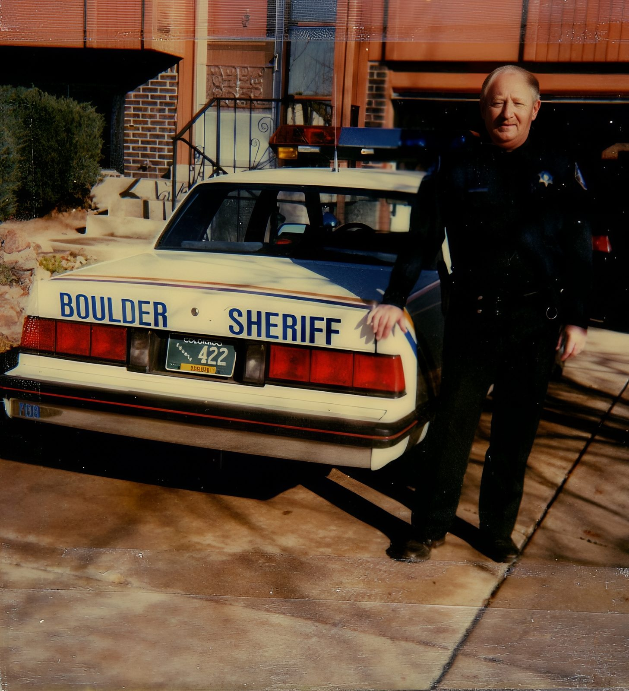

Anthony Frank Unocic

For 29 years, Anthony Frank Unocic served the people of Boulder County, Colorado, as a deputy with the Boulder County Sheriff's Department, where he trained fellow deputies as a firearms and defensive driving instructor. It was a career built on duty, steadiness, and a deep sense of responsibility to the community he called home.
Before he entered law enforcement, Anthony Frank Unocic worked at Marv's Towing Service. It was hands-on, dependable work — the kind that suited a man who valued doing a job right and seeing it through. That same reliability would come to define his nearly three decades in uniform.
He made his home first in Boulder and later in Longmont, Colorado — the places where he built his life and where he was known as a man you could count on.
Away from his work, Anthony Frank Unocic was a man of simple, steady pleasures. He loved motorcycles, and the open road gave him a freedom that balanced the weight of a career in service. Friends and neighbors knew him for his kindness and his calm, unshakeable presence.
His life was anchored by his marriage to Diane Carol Unocic. The two met on a blind date and went on to share more than fifty years together — a partnership that was the foundation of everything he did.
Anthony Frank Unocic gave his career to public service and his life to his family. He is remembered for his commitment, his quiet strength, and the steady example he set in everything he did.
Beloved husband of Diane Carol Unocic. Retired, Boulder County Sheriff's Department. Long-time resident of Boulder and Longmont, Colorado.